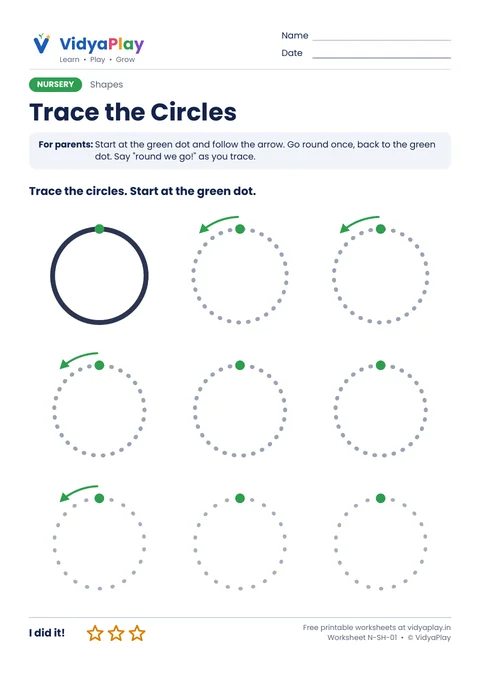
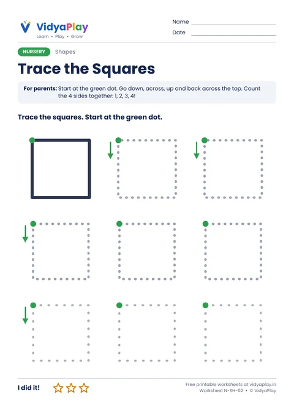
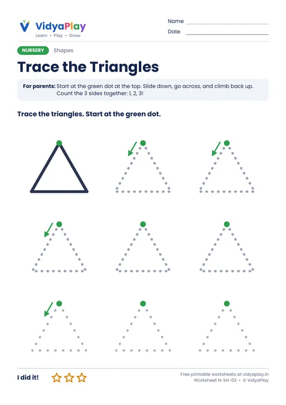
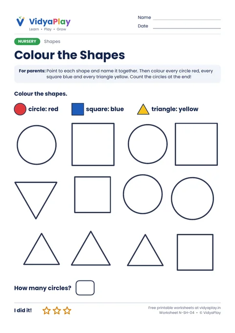

Shapes Worksheets for Nursery
Big shapes to trace from the green dot: circles, squares and triangles. Then colour each shape in its own colour and count the circles.
Free · A4 PDF · Prints in black and white · Ages 2.5 to 4
All 4 shapes worksheets
Trace three shapes, then colour them all.
-

N-SH-01Trace the Circles
Start at the green dot and go round.
Download PDF -

N-SH-02Trace the Squares
Down, across, up and back: 4 sides.
Download PDF -

N-SH-03Trace the Triangles
Slide down, go across, climb up: 3 sides.
Download PDF -

N-SH-04Colour the Shapes
Circles red, squares blue, triangles yellow.
Download PDF
Tips for parents
- Find shapes at home: a plate, a window, a samosa.
- Count the sides of each shape together.
- Fat crayons are easiest for little hands.